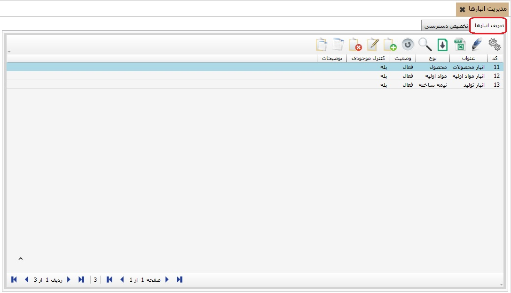

در این بخش شما می توانید انبار های خود را تعریف و مدیریت کنید برای ورود به صفحه مدیریت انبار ها، منوی «مدیریت انبارها» را از بخش «اطلاعات پایه و عملیات» انتخاب کنید، پنجره ای ظاهرمی شود که شامل دو تب «تعریف انبار ها» و «تخصیص دسترسی کاربر به انبار» می باشد. با استفاده از این دو تب به ترتیب شما می توانید انبارهای خود را ایجاد کنید و در گام بعد مشخص کنید که هر کاربر به کدام یک از انبار ها دسترسی داشته باشد.

برای اضافه کردن یک انبار جدید روی آیکن اضافه
 کلیک کنید. فرم ایجاد انبار نشان داده می شود:
کلیک کنید. فرم ایجاد انبار نشان داده می شود:

کد انبار در حال ایجاد به صورت اتوماتیک توسط سیستم تعیین می شود ولی شما می توانید آن را ویرایش کنید با این شرط که کدی که مشخص می کنید تکراری نباشد. اما پس از اتمام فرم فوق و تایید آن دیگر نمی توانید کد انبار ایجاد شده را تغییر دهید. در فیلد عنوان، عنوان انبار در حال ایجاد را تایپ کنید. در فیلد نوع، می توانید نوع انبار(اعم از مواد اولیه، محصول، ضایعات و ...) را از لیست باز شده انتخاب کنیددر فیلد کنترل موجودی، اگر روی بله باشد کنترل موجودی بر روی این انبار اعمال می شود و در صورت خیر بودن کنترل موجودی بر روی این انبار اعمال نمی شود. برای اینکه در فرم صدور سند انبار، انبار ایجاد شده فعال باشد باید فیلد وضعیت روی گزینه فعال قرار یابد هر زمان که مایل بودید می توانید یک انبار را غیر فعال کنید. در ادامه اگر توضیحات خاصی نیاز بود می توانید در فیلد توضیحات تایپ کنید و با تایید اطلاعات وارده انبار جدید را ایجاد نمایید.
هر کاربر اجازه صدور اسناد در مورد انبارهایی را دارد که به آن انبارها دسترسی داشته باشد. با کلیک بر تب «تخصیص دسترسی کاربر به انبار» پنجره زیر ظاهر می شود:

در قسمت شماره ی 1 لیست کاربران را مشاهده می کنید که کاربر مدیر سیستم در حالت انتخاب قرار دارد، در قسمت شماره ی 2 لیست انبارهایی را مشاهده می کنید که دسترسی آن ها به کاربر انتخابی داده شده است و قسمت شماره ی 3 شامل انبارهایی تخصیص نیافته به این کاربر است.
عملیات انتقال با دو فلش
 انجام می شود.
انجام می شود.